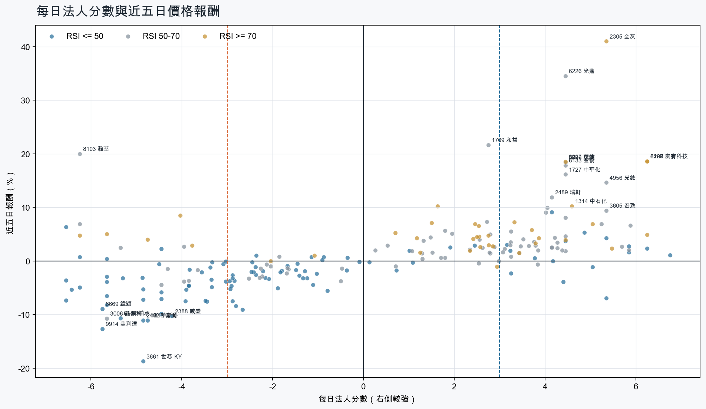
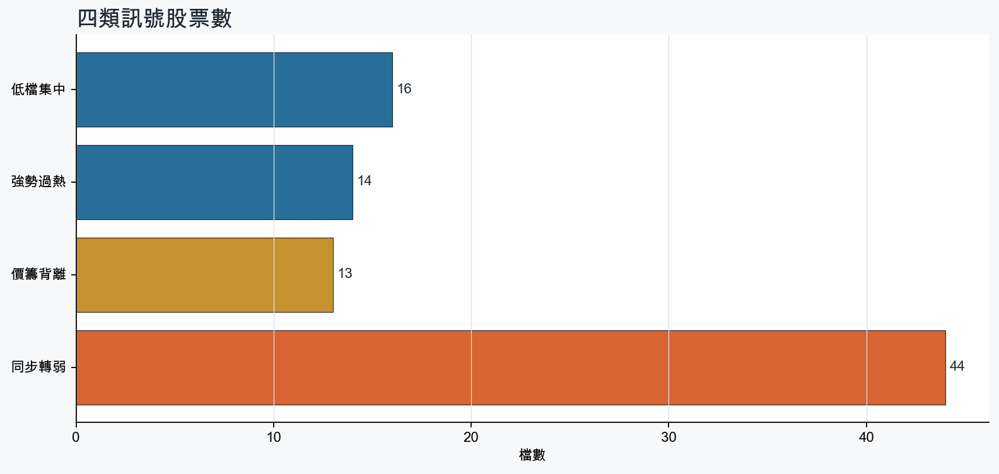
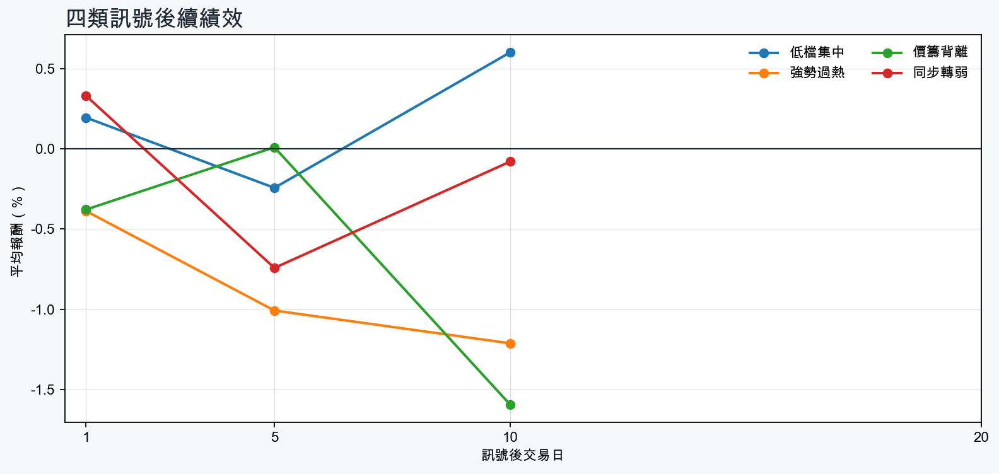

市場情緒中性分歧
近5日法人合計-4,219,069 張
篩選池上漲比例54.1%
籌碼好 / RSI低15 檔
籌碼差 / 價跌15 檔



EPS × PE VALUATION
法人常用的相對估值
顯示保守、基準與樂觀估值帶，不把單一數字包裝成精準目標價。
最新累計 EPS 依季數年化 × 同產業有效 P/E 的 Q25／中位數／Q75。排除本公司、非正 P/E，並以 1.5×IQR 排除離群值。估值帶是公開資料篩選值，不是法人目標價；未使用分析師預估 EPS。
MOOD × MONEY
情緒與籌碼雷達
熱度代表被討論程度；情緒分與法人方向分開計算。熱門不等於適合追價，樣本不足也不硬判多空。
| 股票 | 情緒 | 討論熱度 | 情緒 × 籌碼 | 情緒 × 基本面 |
|---|---|---|---|---|
| 3029 零壹價籌背離 | 情緒高漲 +50.7信心 85 | 1001 篇 / 224 留言 / 1 則新聞 | 熱門但法人撤退法人分 -4.0 | 基本面與情緒共振基本面分 +3.0 |
| 8358 金居同步轉弱 | 中性分歧 +13.8信心 100 | 912 篇 / 119 留言 / 3 則新聞 | 高熱分歧法人分 -5.7 | 基本面與情緒分歧基本面分 +3.6 |
| 2891 中信金強勢過熱 | 偏多 +33.6信心 80 | 791 篇 / 57 留言 / 3 則新聞 | 情籌共振法人分 +3.7 | 基本面與情緒共振基本面分 +1.0 |
| 6669 緯穎同步轉弱 | 情緒低迷 -60.6信心 80 | 771 篇 / 52 留言 / 3 則新聞 | 情籌雙弱法人分 -5.8 | 基本面佳、情緒悲觀基本面分 +3.0 |
| 2609 陽明強勢過熱 | 偏多 +33.5信心 68 | 721 篇 / 34 留言 / 3 則新聞 | 情籌共振法人分 +5.0 | 基本面與情緒共振基本面分 +3.0 |
| 3045 台灣大強勢過熱 | 中性分歧 +0.0信心 59 | 641 篇 / 17 留言 / 3 則新聞 | 情籌混合法人分 +3.8 | 基本面與情緒分歧基本面分 +2.4 |
| 8227 巨有科技強勢過熱 | 情緒高漲 +39.5信心 52 | 621 篇 / 19 留言 / 1 則新聞 | 情籌共振法人分 +6.2 | 基本面與情緒共振基本面分 +3.0 |
| 2305 全友強勢過熱 | 中性分歧 +8.4信心 60 | 611 篇 / 12 留言 / 3 則新聞 | 情籌混合法人分 +5.3 | 基本面與情緒分歧基本面分 +3.6 |
| 3624 光頡價籌背離 | 中性分歧 +9.2信心 51 | 571 篇 / 9 留言 / 2 則新聞 | 情籌混合法人分 -4.8 | 基本面與情緒分歧基本面分 +3.6 |
| 2327 國巨*同步轉弱 | 偏空 -29.7信心 30 | 420 篇 / 0 留言 / 3 則新聞 | 情籌雙弱法人分 -3.9 | 基本面佳、情緒悲觀基本面分 +3.6 |
| 2486 一詮同步轉弱 | 偏多 +29.7信心 30 | 420 篇 / 0 留言 / 3 則新聞 | 熱門但法人撤退法人分 -6.4 | 基本面與情緒共振基本面分 +3.0 |
| 2338 光罩價籌背離 | 偏多 +29.7信心 30 | 420 篇 / 0 留言 / 3 則新聞 | 熱門但法人撤退法人分 -6.2 | 基本面與情緒分歧基本面分 +0.4 |
01
籌碼好 / RSI低
優先研究基本面；法人續買且價格止穩時，才適合分批觀察。
| 股票 / 確認狀態 | 每日法人分 | 浦男式近似 | 法人加速度 | RSI / 相對強弱 | 量價確認 | 融資融券 | 每週集保確認 | 基本面 | EPS × 同業 P/E 估值 | 情緒 / 情籌 | 近期消息 | 論壇討論 |
|---|---|---|---|---|---|---|---|---|---|---|---|---|
| 2351 順德可研究 · 100 分籌碼與價格確認，可列研究清單 | +6.8法人 +2,490 張 / 5 天 | 接近 · 90站上月線；中期均線偏多；法人籌碼偏多；留意量能異常 | +639 張近3日 +1,460 / 連續 +5 日 | 49.3相對大盤 +26.7% | 量比 0.51確認分 +5.2成交量不足 | -%融資 - 張 / 融券 - 張 | +5.49 pp1000張 +6.65 pp | 單月營收年增 +61.2%；累計營收年增 +32.5%；2026 Q2 累計 EPS 2.82仍需觀察下一期財報延續性來源：公開資訊觀測站 | 基準 NT$ 146.5估值帶 99.21–250.9現價 238.0 · 估值帶內 · 距基準 -38.5%2026 Q2 累計 EPS 2.82 → 年化 5.64半導體同業 P/E 17.59／25.97／44.48 · n=148 · 信心中等以 Q2 累計 EPS 年化，不等同分析師全年預估來源：TWSE／TPEx 每日本益比 | 偏多 +29.7熱度 42 / 信心 30情籌共振 | 【順德法說會重點內容備忘錄】未來展望趨勢 20260825富果直送 · 08/25【09/14 產業即時新聞】IC導線架族群強勢表態，順德亮燈漲停引爆車用與功率元件買氣CMoney投資網誌 · 09/14 | 近期沒有明確提及本股的論壇樣本 |
| 6108 競國可研究 · 93 分籌碼與價格確認，可列研究清單 | +5.3法人 +1,678 張 / 4 天 | 接近 · 77站上月線；中期均線偏多；法人籌碼偏多；留意明顯弱於大盤、動能位置非最佳 | +2,061 張近3日 +1,747 / 連續 +4 日 | 41.2相對大盤 -9.6% | 量比 1.01確認分 +2.5近20日弱於大盤 | -%融資 - 張 / 融券 - 張 | +2.15 pp1000張 +3.00 pp | 單月營收年增 +45.7%；累計營收年增 +31.2%；2026 Q2 累計 EPS 0.322026 Q2 累計營益率 -8.0%來源：公開資訊觀測站 | 基準 NT$ 16.47估值帶 11.24–25.99現價 24.30 · 估值帶內 · 距基準 -32.2%2026 Q2 累計 EPS 0.32 → 年化 0.64電子零組件同業 P/E 17.56／25.74／40.61 · n=149 · 信心較低以 Q2 累計 EPS 年化，不等同分析師全年預估；年化 EPS 為交易所近四季 EPS 的 3.20 倍，需保守解讀來源：TWSE／TPEx 每日本益比 | 中性分歧 +0.0熱度 36 / 信心 20情籌混合 | 【10:39 即時新聞】競國(6108)股價走強，市場聚焦官股與法人買盤CMoney投資網誌 · 09/17【競國法說會重點內容備忘錄】未來展望趨勢 20260825富果直送 · 08/25 | 近期沒有明確提及本股的論壇樣本 |
| 2103 台橡可研究 · 96 分籌碼與價格確認，可列研究清單 | +4.2法人 +5,788 張 / 4 天 | 接近 · 89站上月線；中期均線偏多；法人籌碼偏多；留意相對強度普通 | +6,235 張近3日 +5,951 / 連續 +3 日 | 50.0相對大盤 -1.8% | 量比 1.48確認分 +4.1價格、量能與籌碼未見明顯弱項 | -%融資 - 張 / 融券 - 張 | -0.21 pp1000張 -0.24 pp | 單月營收年增 +21.8%；累計營收年增 +16.8%；2026 Q2 累計 EPS 2.26仍需觀察下一期財報延續性來源：公開資訊觀測站 | 基準 NT$ 64.23估值帶 36.21–68.93現價 28.20 · 低於估值帶 · 距基準 +127.8%2026 Q2 累計 EPS 2.26 → 年化 4.52橡膠工業同業 P/E 8.01／14.21／15.25 · n=7 · 信心較低以 Q2 累計 EPS 年化，不等同分析師全年預估來源：TWSE／TPEx 每日本益比 | 樣本不足 +0.0熱度 25 / 信心 10情緒樣本不足 | 2103 台橡- 【11:46 即時新聞】臺橡(2103)股價走強，法人與主力同步偏多- 股市爆料同學會CMoney · 09/16 | 近期沒有明確提及本股的論壇樣本 |
| 5483 中美晶等待確認 · 86 分籌碼有訊號，但價格尚未確認 | +5.8法人 +10,608 張 / 4 天 | 接近 · 75站上月線；法人籌碼偏多；法人買盤加速；留意中期均線未翻多、明顯弱於大盤 | +11,933 張近3日 +10,793 / 連續 +4 日 | 48.4相對大盤 -5.4% | 量比 1.39確認分 +1.620日線低於60日線；近20日弱於大盤 | -1.8%融資 -299 張 / 融券 +21 張 | -1.46 pp1000張 -1.67 pp | 單月營收年增 +11.7%；累計營收年增 +6.1%；2026 Q2 累計 EPS 5.02仍需觀察下一期財報延續性來源：公開資訊觀測站 | 基準 NT$ 264.4估值帶 176.6–448.8現價 182.0 · 估值帶內 · 距基準 +45.2%2026 Q2 累計 EPS 5.02 → 年化 10.04半導體同業 P/E 17.59／26.33／44.70 · n=148 · 信心中等以 Q2 累計 EPS 年化，不等同分析師全年預估來源：TWSE／TPEx 每日本益比 | 偏多 +29.7熱度 42 / 信心 30情籌共振 | 5483 中美晶 - 今日上櫃外資買超第四名！！ 資料來源：：https://je... - 股市爆料同學會CMoney · 09/175483 中美晶- 《 環球晶977摸完就跑？矽晶圓早盤開趴收盤卻集體冷靜》 - 股市爆料同學會CMoney · 09/17 | 近期沒有明確提及本股的論壇樣本 |
| 2379 瑞昱等待確認 · 78 分籌碼有訊號，但價格尚未確認 | +5.8法人 +3,991 張 / 5 天 | 接近 · 69法人籌碼偏多；法人買盤加速；買超具延續性；留意未站月線、中期均線未翻多 | +286 張近3日 +2,375 / 連續 +7 日 | 48.2相對大盤 -1.3% | 量比 1.35確認分 -0.6收盤跌破20日線；20日線低於60日線 | -%融資 - 張 / 融券 - 張 | -0.54 pp1000張 -0.21 pp | 單月營收年增 +28.1%；累計營收年增 +15.0%；2026 Q2 累計 EPS 15.86仍需觀察下一期財報延續性來源：公開資訊觀測站 | 基準 NT$ 835.2估值帶 558.0–1,418現價 715.0 · 估值帶內 · 距基準 +16.8%2026 Q2 累計 EPS 15.86 → 年化 31.72半導體同業 P/E 17.59／26.33／44.70 · n=148 · 信心中等以 Q2 累計 EPS 年化，不等同分析師全年預估來源：TWSE／TPEx 每日本益比 | 樣本不足 +0.0熱度 0 / 信心 0情緒樣本不足 | 近期沒有通過股票語境篩選的新聞 | 近期沒有明確提及本股的論壇樣本 |
| 2441 超豐可研究 · 85 分籌碼與價格確認，可列研究清單 | +3.2法人 +3,145 張 / 3 天 | 接近 · 85站上月線；法人籌碼偏多；法人買盤加速；留意中期均線未翻多 | +3,261 張近3日 +3,288 / 連續 +1 日 | 50.0相對大盤 +0.9% | 量比 1.43確認分 +3.220日線低於60日線 | -%融資 - 張 / 融券 - 張 | -1.00 pp1000張 -1.52 pp | 單月營收年增 +42.0%；累計營收年增 +26.9%；2026 Q2 累計 EPS 2.98仍需觀察下一期財報延續性來源：公開資訊觀測站 | 基準 NT$ 156.9估值帶 104.8–266.4現價 118.5 · 估值帶內 · 距基準 +32.4%2026 Q2 累計 EPS 2.98 → 年化 5.96半導體同業 P/E 17.59／26.33／44.70 · n=148 · 信心中等以 Q2 累計 EPS 年化，不等同分析師全年預估來源：TWSE／TPEx 每日本益比 | 中性分歧 +0.0熱度 42 / 信心 30情籌混合 | 超豐受惠AI及高效能運算需求 帶動封裝出貨 庫藏股看好未來營運理財周刊 · 08/261表評》日月光、京元電、力成、欣銓、超豐...封測廠8月營收「4上3下」 法人僅推「這2家」：目標價、EPS完整看- 上市櫃旺得富理財網 · 09/01 | 近期沒有明確提及本股的論壇樣本 |
| 3034 聯詠等待確認 · 75 分籌碼有訊號，但價格尚未確認 | +4.2法人 +3,525 張 / 4 天 | 命中 · 83站上月線；中期均線偏多；法人籌碼偏多；留意法人買盤未加速、量能尚未確認 | -2,809 張近3日 +804 / 連續 +2 日 | 50.0相對大盤 +0.4% | 量比 0.70確認分 -0.1法人買盤減速 | -%融資 - 張 / 融券 - 張 | +0.76 pp1000張 +0.29 pp | 單月營收年增 +26.3%；累計營收年增 +4.1%；2026 Q2 累計 EPS 16.59仍需觀察下一期財報延續性來源：公開資訊觀測站 | 基準 NT$ 873.6估值帶 583.6–1,483現價 545.0 · 低於估值帶 · 距基準 +60.3%2026 Q2 累計 EPS 16.59 → 年化 33.18半導體同業 P/E 17.59／26.33／44.70 · n=148 · 信心中等以 Q2 累計 EPS 年化，不等同分析師全年預估來源：TWSE／TPEx 每日本益比 | 偏多 +29.7熱度 42 / 信心 30情籌共振 | 聯詠價漲量縮收552元！大戶鎖碼71%、外資持股破43%，土洋對決與壓力關卡全解析理財周刊 · 09/01聯詠(3034)獲瑞銀估明年賺35元，毛利率撐得起評價嗎？-柏宇 KD 獲利模式CMoney投資網誌 · 09/17 | 近期沒有明確提及本股的論壇樣本 |
| 5425 台半可研究 · 85 分籌碼與價格確認，可列研究清單 | +4.5法人 +4,445 張 / 3 天 | 接近 · 75站上月線；法人籌碼偏多；法人買盤加速；留意中期均線未翻多、相對強度普通 | +1,487 張近3日 +2,583 / 連續 -1 日 | 43.3相對大盤 -0.5% | 量比 0.93確認分 +3.520日線低於60日線 | -2.3%融資 -292 張 / 融券 -400 張 | -3.56 pp1000張 -3.26 pp | 單月營收年增 +22.4%；累計營收年增 +7.5%；2026 Q2 累計 EPS 1.52仍需觀察下一期財報延續性來源：公開資訊觀測站 | 基準 NT$ 78.95估值帶 53.47–135.9現價 92.60 · 估值帶內 · 距基準 -14.7%2026 Q2 累計 EPS 1.52 → 年化 3.04半導體同業 P/E 17.59／25.97／44.70 · n=148 · 信心中等以 Q2 累計 EPS 年化，不等同分析師全年預估來源：TWSE／TPEx 每日本益比 | 中性分歧 +0.0熱度 42 / 信心 30情籌混合 | 1圖PK》台半、德微、強茂...功率半導體3雄漲停還能追？專家揭4指標、3看點：擺脫AI題材股- 上市櫃旺得富理財網 · 09/17AI電源革命點燃功率半導體！德微漲停、強茂台半急追 800V架構＋漲價潮成雙引擎理財周刊 · 09/16 | 近期沒有明確提及本股的論壇樣本 |
| 2027 大成鋼等待確認 · 71 分籌碼有訊號，但價格尚未確認 | +3.2法人 +9,028 張 / 4 天 | 接近 · 66中期均線偏多；法人籌碼偏多；法人買盤加速；留意未站月線、明顯弱於大盤 | +3,876 張近3日 +6,173 / 連續 +3 日 | 43.6相對大盤 -9.8% | 量比 0.79確認分 -0.4收盤跌破20日線；近20日弱於大盤 | -%融資 - 張 / 融券 - 張 | +0.26 pp1000張 -0.12 pp | 單月營收年增 +46.1%；累計營收年增 +34.2%；2026 Q2 累計 EPS 3.10仍需觀察下一期財報延續性來源：公開資訊觀測站 | 基準 NT$ 78.12估值帶 61.88–90.83現價 47.10 · 低於估值帶 · 距基準 +65.9%2026 Q2 累計 EPS 3.10 → 年化 6.20鋼鐵工業同業 P/E 9.98／12.60／14.65 · n=27 · 信心中等以 Q2 累計 EPS 年化，不等同分析師全年預估來源：TWSE／TPEx 每日本益比 | 中性分歧 +0.0熱度 42 / 信心 30情籌混合 | 2027 大成鋼 - 這波殺下來，大家都安靜了不少！ - 股市爆料同學會CMoney · 09/17個股：大成鋼(2027)高規管材搶進AI資料中心，H2靜待成本壓力散去富聯網 · 09/17 | 近期沒有明確提及本股的論壇樣本 |
| 3042 晶技等待確認 · 69 分籌碼有訊號，但價格尚未確認 | +5.0法人 +5,887 張 / 4 天 | 接近 · 61法人籌碼偏多；法人買盤加速；買超具延續性；留意未站月線、中期均線未翻多 | +7,874 張近3日 +4,446 / 連續 +4 日 | 41.7相對大盤 -8.3% | 量比 0.95確認分 -1.0收盤跌破20日線；20日線低於60日線；近20日弱於大盤 | -%融資 - 張 / 融券 - 張 | -3.32 pp1000張 -2.46 pp | 單月營收年增 +23.5%；累計營收年增 +11.7%；2026 Q2 累計 EPS 2.96仍需觀察下一期財報延續性來源：公開資訊觀測站 | 基準 NT$ 148.1估值帶 103.7–245.4現價 178.5 · 估值帶內 · 距基準 -17.1%2026 Q2 累計 EPS 2.96 → 年化 5.92電子零組件同業 P/E 17.52／25.01／41.46 · n=148 · 信心中等以 Q2 累計 EPS 年化，不等同分析師全年預估來源：TWSE／TPEx 每日本益比 | 偏多 +29.7熱度 42 / 信心 30情籌共振 | AI動能強勁，晶技光模塊訂單能見度達明年上半年- 新聞MoneyDJ · 09/16晶技（3042）毛利率為何回升？不是靠漲價，AI、光通訊成關鍵！｜股市話題｜豐雲學堂2026 年 09 月sinotrade.com.tw · 08/26 | 近期沒有明確提及本股的論壇樣本 |
| 2484 希華等待確認 · 71 分籌碼有訊號，但價格尚未確認 | +6.2法人 +3,104 張 / 5 天 | 未命中 · 56法人籌碼偏多；法人買盤加速；買超具延續性；留意未站月線、中期均線未翻多 | +1,191 張近3日 +2,028 / 連續 +5 日 | 38.0相對大盤 -4.1% | 量比 0.68確認分 -0.8收盤跌破20日線；20日線低於60日線；近20日弱於大盤 | -%融資 - 張 / 融券 - 張 | -4.03 pp1000張 -4.99 pp | 單月營收年增 +25.1%；累計營收年增 +1.7%；2026 Q2 累計 EPS 0.86仍需觀察下一期財報延續性來源：公開資訊觀測站 | 基準 NT$ 43.02估值帶 30.13–69.71現價 70.30 · 高於估值帶 · 距基準 -38.8%2026 Q2 累計 EPS 0.86 → 年化 1.72電子零組件同業 P/E 17.52／25.01／40.53 · n=148 · 信心中等以 Q2 累計 EPS 年化，不等同分析師全年預估來源：TWSE／TPEx 每日本益比 | 中性分歧 +0.0熱度 42 / 信心 30情籌混合 | 2484 希華 - 明天-3 - 股市爆料同學會CMoney · 09/17【12:01 即時新聞】希華(2484)盤中小幅走強，法人買盤延續成焦點CMoney投資網誌 · 09/15 | 近期沒有明確提及本股的論壇樣本 |
| 3022 威強電等待確認 · 68 分籌碼有訊號，但價格尚未確認 | +4.9法人 +1,687 張 / 4 天 | 接近 · 65法人籌碼偏多；法人買盤加速；買超具延續性；留意未站月線、中期均線未翻多 | +469 張近3日 +977 / 連續 +1 日 | 48.1相對大盤 -6.9% | 量比 1.16確認分 -0.7收盤跌破20日線；20日線低於60日線；近20日弱於大盤 | -%融資 - 張 / 融券 - 張 | -3.65 pp1000張 -2.13 pp | 單月營收年增 +85.0%；累計營收年增 +32.4%；2026 Q2 累計 EPS 3.292026 Q2 累計營益率 6.5%來源：公開資訊觀測站 | 基準 NT$ 103.9估值帶 82.51–154.9現價 88.90 · 估值帶內 · 距基準 +16.9%2026 Q2 累計 EPS 3.29 → 年化 6.58電腦及週邊同業 P/E 12.54／15.79／23.54 · n=78 · 信心中等以 Q2 累計 EPS 年化，不等同分析師全年預估來源：TWSE／TPEx 每日本益比 | 中性分歧 +0.0熱度 42 / 信心 30情籌混合 | 《電週邊》威強電9月23日參加元大證券舉辦法人說明會富聯網 · 09/17H2看優H1，威強電今年營收首衝90億MoneyDJ · 09/15 | 近期沒有明確提及本股的論壇樣本 |
| 1529 樂事綠能等待確認 · 64 分籌碼有訊號，但價格尚未確認 | +5.3法人 +1,698 張 / 4 天 | 未命中 · 36法人籌碼偏多；法人買盤加速；買超具延續性；留意未站月線、中期均線未翻多 | +1,659 張近3日 +1,673 / 連續 +4 日 | 7.6相對大盤 -15.7% | 量比 3.04確認分 -2.1收盤跌破20日線；20日線低於60日線；近20日弱於大盤；流動性偏低 | -%融資 - 張 / 融券 - 張 | +0.02 pp1000張 +0.99 pp | 單月營收年增 +8.0%；2026 Q2 累計 EPS 0.50；2026 Q2 累計營益率 10.3%累計營收年增 -14.9%來源：公開資訊觀測站 | 基準 NT$ 19.87估值帶 13.73–31.55現價 14.80 · 估值帶內 · 距基準 +34.3%2026 Q2 累計 EPS 0.50 → 年化 1.00電機機械同業 P/E 13.73／19.87／31.55 · n=72 · 信心中等以 Q2 累計 EPS 年化，不等同分析師全年預估來源：TWSE／TPEx 每日本益比 | 樣本不足 +9.9熱度 25 / 信心 10情緒樣本不足 | 【樂事綠能FY2026 H1 法說會】上半年EPS 0.5元台電在手訂單3.3億元100kV/167kV認證成明年關鍵BigGo 財經 · 08/28 | 近期沒有明確提及本股的論壇樣本 |
| 9958 世紀鋼等待確認 · 58 分籌碼有訊號，但價格尚未確認 | +3.8法人 +1,679 張 / 4 天 | 接近 · 60法人籌碼偏多；法人買盤加速；買超具延續性；留意未站月線、中期均線未翻多 | +1,203 張近3日 +1,437 / 連續 +4 日 | 49.2相對大盤 -11.0% | 量比 0.87確認分 -1.8收盤跌破20日線；20日線低於60日線；近20日弱於大盤 | -%融資 - 張 / 融券 - 張 | -5.95 pp1000張 -2.63 pp | 單月營收年增 +91.1%；累計營收年增 +41.5%；2026 Q2 累計 EPS 4.08仍需觀察下一期財報延續性來源：公開資訊觀測站 | 基準 NT$ 97.84估值帶 77.60–119.5現價 91.90 · 估值帶內 · 距基準 +6.5%2026 Q2 累計 EPS 4.08 → 年化 8.16鋼鐵工業同業 P/E 9.51／11.99／14.65 · n=27 · 信心中等以 Q2 累計 EPS 年化，不等同分析師全年預估來源：TWSE／TPEx 每日本益比 | 偏多 +19.8熱度 36 / 信心 20情籌混合 | 世紀鋼訂單逐步認列/印尼廠將完工，助中長期成長- 新聞MoneyDJ · 08/21世紀鋼法說會／離岸風電擴大成長 有機遇有風險經濟日報 · 08/13 | 近期沒有明確提及本股的論壇樣本 |
| 2385 群光等待確認 · 58 分先等基本面止穩 | +3.2法人 +2,449 張 / 5 天 | 未命中 · 51中期均線偏多；法人籌碼偏多；法人買盤加速；留意未站月線、明顯弱於大盤 | +1,365 張近3日 +1,224 / 連續 +5 日 | 43.9相對大盤 -4.4% | 量比 0.85確認分 -0.8收盤跌破20日線；近20日弱於大盤 | -%融資 - 張 / 融券 - 張 | +0.31 pp1000張 +0.03 pp | 2026 Q2 累計 EPS 5.06單月營收年增 -23.1%；累計營收年增 -8.5%；2026 Q2 累計營益率 5.0%來源：公開資訊觀測站 | 基準 NT$ 261.7估值帶 179.9–419.6現價 105.5 · 低於估值帶 · 距基準 +148.1%2026 Q2 累計 EPS 5.06 → 年化 10.12電子零組件同業 P/E 17.78／25.86／41.46 · n=148 · 信心中等以 Q2 累計 EPS 年化，不等同分析師全年預估來源：TWSE／TPEx 每日本益比 | 樣本不足 +0.0熱度 0 / 信心 0情緒樣本不足 | 近期沒有通過股票語境篩選的新聞 | 近期沒有明確提及本股的論壇樣本 |
02
籌碼好 / RSI高
趨勢強但不追價，等待量縮、RSI降溫或回測支撐。
| 股票 / 確認狀態 | 每日法人分 | 浦男式近似 | 法人加速度 | RSI / 相對強弱 | 量價確認 | 融資融券 | 每週集保確認 | 基本面 | EPS × 同業 P/E 估值 | 情緒 / 情籌 | 近期消息 | 論壇討論 |
|---|---|---|---|---|---|---|---|---|---|---|---|---|
| 2609 陽明等待拉回 · 100 分等拉回，不追價 | +5.0法人 +57,404 張 / 4 天 | 接近 · 75站上月線；中期均線偏多；法人籌碼偏多；留意相對強度普通、量能異常 | +19,656 張近3日 +38,224 / 連續 +3 日 | 71.0相對大盤 -0.2% | 量比 0.52確認分 +3.1成交量不足 | -%融資 - 張 / 融券 - 張 | +4.25 pp1000張 +4.40 pp | 單月營收年增 +56.2%；累計營收年增 +11.9%；2026 Q2 累計 EPS 2.052026 Q2 累計營益率 7.6%來源：公開資訊觀測站 | 基準 NT$ 45.10估值帶 36.86–58.67現價 62.00 · 高於估值帶 · 距基準 -27.3%2026 Q2 累計 EPS 2.05 → 年化 4.10航運業同業 P/E 8.99／11.00／14.31 · n=26 · 信心中等以 Q2 累計 EPS 年化，不等同分析師全年預估來源：TWSE／TPEx 每日本益比 | 偏多 +33.5熱度 72 / 信心 68情籌共振 | 陽明股價淨值比0.64倍，為何散戶狂逃、大戶外資狂鎖碼，60元天塹卻三度攻不下？理財周刊 · 09/16近22月新高！陽明海運8月營收216億元 年增56%Yahoo股市 · 09/09 | [新聞] 陽明運力UP 15,500TEU級LNG雙燃料新船投PTT Stock · 09-17 · 34 留言 |
| 8227 巨有科技等待拉回 · 100 分等拉回，不追價 | +6.2法人 +3,096 張 / 5 天 | 接近 · 83站上月線；中期均線偏多；法人籌碼偏多；留意法人買盤未加速、RSI過熱 | -1,908 張近3日 +748 / 連續 +9 日 | 82.6相對大盤 +72.5% | 量比 1.08確認分 +1.9法人買盤減速；融資單日增幅偏高 | +12.8%融資 +450 張 / 融券 +48 張 | +6.46 pp1000張 +3.67 pp | 單月營收年增 +42.2%；累計營收年增 +73.2%；2026 Q2 累計 EPS 3.232026 Q2 累計營益率 7.3%來源：公開資訊觀測站 | 基準 NT$ 167.8估值帶 113.6–287.3現價 258.0 · 估值帶內 · 距基準 -35.0%2026 Q2 累計 EPS 3.23 → 年化 6.46半導體同業 P/E 17.59／25.97／44.48 · n=148 · 信心中等以 Q2 累計 EPS 年化，不等同分析師全年預估來源：TWSE／TPEx 每日本益比 | 情緒高漲 +39.5熱度 62 / 信心 52情籌共振 | 8227 巨有科技 - 9/16 融資增加，融券423增加了…..看來空軍不死心，跟... - 股市爆料同學會CMoney · 09/17 | [情報] 8227 巨有科技 8月自結:0.36 年增:-12%PTT Stock · 09-15 · 19 留言 |
| 4961 天鈺等待拉回 · 100 分等拉回，不追價 | +6.2法人 +2,318 張 / 5 天 | 命中 · 96站上月線；中期均線偏多；法人籌碼偏多；留意動能位置非最佳 | +592 張近3日 +1,376 / 連續 +5 日 | 73.3相對大盤 +7.0% | 量比 1.82確認分 +6.2價格、量能與籌碼未見明顯弱項 | -%融資 - 張 / 融券 - 張 | +0.22 pp1000張 +0.89 pp | 單月營收年增 +50.2%；累計營收年增 +10.6%；2026 Q2 累計 EPS 5.072026 Q2 累計營益率 8.0%來源：公開資訊觀測站 | 基準 NT$ 267.0估值帶 178.4–453.3現價 181.0 · 估值帶內 · 距基準 +47.5%2026 Q2 累計 EPS 5.07 → 年化 10.14半導體同業 P/E 17.59／26.33／44.70 · n=148 · 信心中等以 Q2 累計 EPS 年化，不等同分析師全年預估來源：TWSE／TPEx 每日本益比 | 樣本不足 +0.0熱度 25 / 信心 10情緒樣本不足 | 天鈺8月營收佳；續推進邊緣AI佈局MoneyDJ · 09/16 | 近期沒有明確提及本股的論壇樣本 |
| 6168 宏齊等待拉回 · 100 分等拉回，不追價 | +6.2法人 +6,635 張 / 5 天 | 接近 · 82站上月線；中期均線偏多；法人籌碼偏多；留意量能異常、動能位置非最佳 | +2,411 張近3日 +3,923 / 連續 +5 日 | 75.4相對大盤 +38.4% | 量比 3.80確認分 +5.3價格、量能與籌碼未見明顯弱項 | -%融資 - 張 / 融券 - 張 | -0.29 pp1000張 -0.72 pp | 單月營收年增 +18.5%；累計營收年增 +9.3%；2026 Q2 累計 EPS 0.172026 Q2 累計營益率 -0.4%來源：公開資訊觀測站 | 基準 NT$ 8.09估值帶 4.35–12.32現價 35.35 · 高於估值帶 · 距基準 -77.1%2026 Q2 累計 EPS 0.17 → 年化 0.34光電同業 P/E 12.80／23.80／36.23 · n=69 · 信心中等以 Q2 累計 EPS 年化，不等同分析師全年預估來源：TWSE／TPEx 每日本益比 | 中性分歧 +0.0熱度 42 / 信心 30情籌混合 | 6168 宏齊- 很好-差一檔五燈獎-期待 - 股市爆料同學會CMoney · 09/17【10:19 即時新聞】宏齊(6168)股價走強，利基型車用與無人機題材受關注CMoney投資網誌 · 09/17 | 近期沒有明確提及本股的論壇樣本 |
| 2305 全友等待拉回 · 100 分等拉回，不追價 | +5.3法人 +6,620 張 / 4 天 | 接近 · 80站上月線；中期均線偏多；法人籌碼偏多；留意量能異常、RSI過熱 | +1,532 張近3日 +4,944 / 連續 +2 日 | 96.7相對大盤 +101.5% | 量比 0.40確認分 +5.2成交量不足 | -%融資 - 張 / 融券 - 張 | +1.32 pp1000張 +1.24 pp | 單月營收年增 +240.0%；累計營收年增 +113.2%；2026 Q2 累計 EPS 0.51仍需觀察下一期財報延續性來源：公開資訊觀測站 | 基準 NT$ 16.10估值帶 12.66–23.60現價 54.30 · 高於估值帶 · 距基準 -70.4%2026 Q2 累計 EPS 0.51 → 年化 1.02電腦及週邊同業 P/E 12.41／15.78／23.14 · n=78 · 信心中等以 Q2 累計 EPS 年化，不等同分析師全年預估來源：TWSE／TPEx 每日本益比 | 中性分歧 +8.4熱度 61 / 信心 60情籌混合 | 全友、聯一光等5檔9/18打入處置 光罩等29檔列注意股自由財經 · 09/17快訊／台股5檔「抓去關」新名單 全友、聯一光處置7個營業日ETtoday財經雲 · 09/17 | [情報] 2305 全友 7月自結PTT Stock · 09-14 · 12 留言 |
| 2820 華票等待拉回 · 88 分等拉回，不追價 | +5.5法人 +10,799 張 / 5 天 | 命中 · 89站上月線；中期均線偏多；法人籌碼偏多；留意法人買盤未加速、動能位置非最佳 | -1,952 張近3日 +5,249 / 連續 +8 日 | 71.1相對大盤 +4.0% | 量比 1.47確認分 +1.7法人買盤減速 | -%融資 - 張 / 融券 - 張 | +0.01 pp1000張 -0.18 pp | 單月營收年增 +54.7%；累計營收年增 +46.7%；2026 Q2 累計 EPS 1.07仍需觀察下一期財報延續性來源：公開資訊觀測站 | 基準 NT$ 29.51估值帶 15.30–35.05現價 17.45 · 估值帶內 · 距基準 +69.1%2026 Q2 累計 EPS 1.07 → 年化 2.14金融保險同業 P/E 7.15／13.79／16.38 · n=39 · 信心中等以 Q2 累計 EPS 年化，不等同分析師全年預估來源：TWSE／TPEx 每日本益比 | 樣本不足 +0.0熱度 0 / 信心 0情緒樣本不足 | 近期沒有通過股票語境篩選的新聞 | 近期沒有明確提及本股的論壇樣本 |
| 6227 茂綸等待拉回 · 96 分等拉回，不追價 | +4.5法人 +2,646 張 / 3 天 | 接近 · 80站上月線；中期均線偏多；法人籌碼偏多；留意量能異常、RSI過熱 | +622 張近3日 +1,661 / 連續 +1 日 | 79.5相對大盤 +13.5% | 量比 3.58確認分 +4.8融資單日增幅偏高 | +6.2%融資 +140 張 / 融券 -7 張 | -2.04 pp1000張 +0.00 pp | 單月營收年增 +168.9%；累計營收年增 +51.4%；2026 Q2 累計 EPS 6.842026 Q2 累計營益率 5.9%來源：公開資訊觀測站 | 基準 NT$ 167.4估值帶 139.3–315.9現價 137.5 · 低於估值帶 · 距基準 +21.8%2026 Q2 累計 EPS 6.84 → 年化 13.68電子通路同業 P/E 10.18／12.24／23.09 · n=31 · 信心中等以 Q2 累計 EPS 年化，不等同分析師全年預估來源：TWSE／TPEx 每日本益比 | 樣本不足 +0.0熱度 25 / 信心 10情緒樣本不足 | 【13:06 即時新聞】茂綸(6227)股價走強，AI資料中心題材成盤中焦點CMoney投資網誌 · 09/17 | 近期沒有明確提及本股的論壇樣本 |
| 2637 慧洋-KY等待拉回 · 75 分等拉回，不追價 | +3.4法人 +4,632 張 / 3 天 | 接近 · 79站上月線；中期均線偏多；法人籌碼偏多；留意法人買盤未加速、量能異常 | -1,685 張近3日 +2,175 / 連續 -1 日 | 72.0相對大盤 +4.7% | 量比 0.45確認分 +0.3成交量不足；法人買盤減速 | -%融資 - 張 / 融券 - 張 | +0.37 pp1000張 +0.03 pp | 單月營收年增 +35.0%；累計營收年增 +35.4%；2026 Q2 累計 EPS 4.10仍需觀察下一期財報延續性來源：公開資訊觀測站 | 基準 NT$ 90.28估值帶 73.72–117.8現價 102.0 · 估值帶內 · 距基準 -11.5%2026 Q2 累計 EPS 4.10 → 年化 8.20航運業同業 P/E 8.99／11.01／14.36 · n=26 · 信心中等以 Q2 累計 EPS 年化，不等同分析師全年預估來源：TWSE／TPEx 每日本益比 | 中性分歧 +0.0熱度 36 / 信心 20情籌混合 | 個股：慧洋-KY(2637)集團新船40,000噸MV Paiwan Integrity交船加入營運富聯網 · 09/17【13:07 即時新聞】慧洋-KY(2637)盤中勁揚逾5% 聚焦散裝航運運價與地緣風險CMoney投資網誌 · 09/16 | 近期沒有明確提及本股的論壇樣本 |
| 2891 中信金等待拉回 · 97 分等拉回，不追價 | +3.7法人 +47,439 張 / 5 天 | 命中 · 92站上月線；中期均線偏多；法人籌碼偏多；留意動能位置非最佳 | +24,305 張近3日 +36,564 / 連續 +6 日 | 77.4相對大盤 +9.3% | 量比 1.12確認分 +6.0價格、量能與籌碼未見明顯弱項 | -%融資 - 張 / 融券 - 張 | +0.01 pp1000張 +0.03 pp | 累計營收年增 +36.5%；2026 Q2 累計 EPS 1.96單月營收年增 -32.0%來源：公開資訊觀測站 | 基準 NT$ 53.35估值帶 28.03–63.62現價 71.20 · 高於估值帶 · 距基準 -25.1%2026 Q2 累計 EPS 1.96 → 年化 3.92金融保險同業 P/E 7.15／13.61／16.23 · n=39 · 信心中等以 Q2 累計 EPS 年化，不等同分析師全年預估來源：TWSE／TPEx 每日本益比 | 偏多 +33.6熱度 79 / 信心 80情籌共振 | 年化配息率飆19%！00918重倉緯穎、中信金、廣達「季配1.75元今最後買進日」 暴增4.3萬股民搶錢Yahoo股市 · 09/17銀行/保險同爭氣，中信金前八月可供配息水位超標- 新聞MoneyDJ · 09/15 | [情報] 2891 中信金 8月自結 0.51 累計 2.70PTT Stock · 09-14 · 57 留言 |
| 3045 台灣大等待拉回 · 86 分等拉回，不追價 | +3.8法人 +9,677 張 / 5 天 | 接近 · 78站上月線；中期均線偏多；法人籌碼偏多；留意法人買盤未加速、量能尚未確認 | -891 張近3日 +5,090 / 連續 +10 日 | 84.0相對大盤 +4.8% | 量比 0.76確認分 +2.6法人買盤減速 | -%融資 - 張 / 融券 - 張 | +0.89 pp1000張 +0.75 pp | 單月營收年增 +8.5%；累計營收年增 +4.7%；2026 Q2 累計 EPS 2.86仍需觀察下一期財報延續性來源：公開資訊觀測站 | 基準 NT$ 122.0估值帶 84.66–237.1現價 124.0 · 估值帶內 · 距基準 -1.6%2026 Q2 累計 EPS 2.86 → 年化 5.72通信網路同業 P/E 14.80／21.32／41.45 · n=58 · 信心中等以 Q2 累計 EPS 年化，不等同分析師全年預估來源：TWSE／TPEx 每日本益比 | 中性分歧 +0.0熱度 64 / 信心 59情籌混合 | 外資狂買22日 台灣大創新高自由財經 · 09/15台灣大目標價 外資喊130元UDN · 09/16 | Re: [新聞] 台灣大收購精誠資訊溢價29.5%！每股184.5PTT Stock · 09-15 · 17 留言 |
| 2412 中華電等待拉回 · 94 分等拉回，不追價 | +4.5法人 +48,562 張 / 5 天 | 接近 · 90站上月線；中期均線偏多；法人籌碼偏多；留意RSI過熱 | +1,467 張近3日 +26,982 / 連續 +10 日 | 95.2相對大盤 +3.2% | 量比 1.43確認分 +3.5價格、量能與籌碼未見明顯弱項 | -%融資 - 張 / 融券 - 張 | +0.11 pp1000張 +0.20 pp | 單月營收年增 +25.6%；累計營收年增 +9.5%；2026 Q2 累計 EPS 2.68仍需觀察下一期財報延續性來源：公開資訊觀測站 | 基準 NT$ 114.3估值帶 79.33–222.2現價 145.0 · 估值帶內 · 距基準 -21.2%2026 Q2 累計 EPS 2.68 → 年化 5.36通信網路同業 P/E 14.80／21.32／41.45 · n=58 · 信心中等以 Q2 累計 EPS 年化，不等同分析師全年預估來源：TWSE／TPEx 每日本益比 | 樣本不足 +0.0熱度 25 / 信心 10情緒樣本不足 | 台股千張大戶動向曝光 聯電、中華電、第一金等獲大戶與法人同步關注 | 市場焦點 | 證券經濟日報 · 09/16 | 近期沒有明確提及本股的論壇樣本 |
| 5876 上海商銀等待拉回 · 84 分等拉回，不追價 | +3.9法人 +13,569 張 / 5 天 | 接近 · 74站上月線；中期均線偏多；法人籌碼偏多；留意法人買盤未加速、量能尚未確認 | -3,785 張近3日 +6,308 / 連續 +10 日 | 83.7相對大盤 +11.4% | 量比 0.66確認分 +2.8法人買盤減速 | -%融資 - 張 / 融券 - 張 | +0.53 pp1000張 +0.66 pp | 單月營收年增 +7.1%；累計營收年增 +2.0%；2026 Q2 累計 EPS 2.08仍需觀察下一期財報延續性來源：公開資訊觀測站 | 基準 NT$ 56.62估值帶 29.74–68.14現價 49.95 · 估值帶內 · 距基準 +13.3%2026 Q2 累計 EPS 2.08 → 年化 4.16金融保險同業 P/E 7.15／13.61／16.38 · n=39 · 信心中等以 Q2 累計 EPS 年化，不等同分析師全年預估來源：TWSE／TPEx 每日本益比 | 樣本不足 +0.0熱度 0 / 信心 0情緒樣本不足 | 近期沒有通過股票語境篩選的新聞 | 近期沒有明確提及本股的論壇樣本 |
| 2892 第一金等待拉回 · 80 分等拉回，不追價 | +3.3法人 +52,873 張 / 4 天 | 接近 · 78站上月線；中期均線偏多；法人籌碼偏多；留意法人買盤未加速、量能尚未確認 | -33,242 張近3日 +18,148 / 連續 +2 日 | 95.0相對大盤 +19.4% | 量比 0.79確認分 +1.8法人買盤減速 | -%融資 - 張 / 融券 - 張 | +0.46 pp1000張 +0.42 pp | 單月營收年增 +13.9%；累計營收年增 +18.0%；2026 Q2 累計 EPS 1.24仍需觀察下一期財報延續性來源：公開資訊觀測站 | 基準 NT$ 33.75估值帶 17.73–40.25現價 40.75 · 高於估值帶 · 距基準 -17.2%2026 Q2 累計 EPS 1.24 → 年化 2.48金融保險同業 P/E 7.15／13.61／16.23 · n=39 · 信心中等以 Q2 累計 EPS 年化，不等同分析師全年預估來源：TWSE／TPEx 每日本益比 | 樣本不足 +0.0熱度 25 / 信心 10情緒樣本不足 | 台股千張大戶動向曝光 聯電、中華電、第一金等獲大戶與法人同步關注 | 市場焦點 | 證券經濟日報 · 09/16 | 近期沒有明確提及本股的論壇樣本 |
| 1314 中石化等待拉回 · 88 分等拉回，不追價 | +4.6法人 +30,661 張 / 4 天 | 接近 · 61站上月線；法人籌碼偏多；法人買盤加速；留意中期均線未翻多、量能異常 | +29,508 張近3日 +27,960 / 連續 +2 日 | 77.9相對大盤 +11.6% | 量比 5.02確認分 +5.320日線低於60日線 | -%融資 - 張 / 融券 - 張 | +0.92 pp1000張 +0.71 pp | 尚無明確成長訊號單月營收年增 -24.4%；累計營收年增 -30.2%；2026 Q2 累計 EPS -0.52來源：公開資訊觀測站 | 不適用年化 EPS 非正數，不適合使用本益比估值 | 中性分歧 +0.0熱度 42 / 信心 30情籌混合 | 中石化出售京華城土地有轉機 今股價跳空大漲早盤一度漲停Yahoo股市 · 09/17焦點股》中石化：京華城土地扣押撤銷 股價大漲自由財經 · 09/17 | 近期沒有明確提及本股的論壇樣本 |
03
籌碼差 / 股價上漲
可能是事件行情或軋空；沒有籌碼改善前避免追高。
| 股票 / 確認狀態 | 每日法人分 | 浦男式近似 | 法人加速度 | RSI / 相對強弱 | 量價確認 | 融資融券 | 每週集保確認 | 基本面 | EPS × 同業 P/E 估值 | 情緒 / 情籌 | 近期消息 | 論壇討論 |
|---|---|---|---|---|---|---|---|---|---|---|---|---|
| 8103 瀚荃風險警示 · 54 分背離警戒，避免追高 | -6.2法人 -1,971 張 / 0 天 | 接近 · 75站上月線；中期均線偏多；明顯強於大盤；留意法人籌碼偏弱、法人買盤未加速 | -561 張近3日 -1,354 / 連續 -6 日 | 69.1相對大盤 +40.6% | 量比 1.69確認分 +2.5法人買盤減速 | -%融資 - 張 / 融券 - 張 | +6.36 pp1000張 +3.15 pp | 單月營收年增 +51.6%；累計營收年增 +30.6%；2026 Q2 累計 EPS 2.75仍需觀察下一期財報延續性來源：公開資訊觀測站 | 基準 NT$ 142.2估值帶 96.36–228.0現價 132.0 · 估值帶內 · 距基準 +7.8%2026 Q2 累計 EPS 2.75 → 年化 5.50電子零組件同業 P/E 17.52／25.86／41.46 · n=148 · 信心中等以 Q2 累計 EPS 年化，不等同分析師全年預估來源：TWSE／TPEx 每日本益比 | 中性分歧 +0.0熱度 36 / 信心 20情籌混合 | 低軌衛星起飛！「這2檔」盤中飆出漲停、雙雙站上百元 瀚荃帶量攻頂、CCL廠受傳言影響齊下殺Yahoo股市 · 09/17【09:46 即時新聞】瀚荃(8103)亮燈漲停，AI電源營收比重提升成盤中焦點CMoney投資網誌 · 09/17 | 近期沒有明確提及本股的論壇樣本 |
| 8028 昇陽半導體風險警示 · 10 分背離警戒，避免追高 | -6.5法人 -4,284 張 / 0 天 | 未命中 · 40站上月線；基本面有支撐；動能強但未過熱；留意中期均線未翻多、法人籌碼偏弱 | -1,951 張近3日 -3,684 / 連續 -8 日 | 47.6相對大盤 -4.2% | 量比 3.12確認分 -3.220日線低於60日線；近20日弱於大盤；法人買盤減速 | -%融資 - 張 / 融券 - 張 | -3.88 pp1000張 -3.51 pp | 單月營收年增 +25.6%；累計營收年增 +29.1%；2026 Q2 累計 EPS 3.32仍需觀察下一期財報延續性來源：公開資訊觀測站 | 基準 NT$ 172.4估值帶 116.8–296.8現價 244.0 · 估值帶內 · 距基準 -29.3%2026 Q2 累計 EPS 3.32 → 年化 6.64半導體同業 P/E 17.59／25.97／44.70 · n=148 · 信心中等以 Q2 累計 EPS 年化，不等同分析師全年預估來源：TWSE／TPEx 每日本益比 | 偏多 +19.8熱度 36 / 信心 20情籌混合 | 8028 昇陽半導體- 不是吧，蛋雕體？ - 股市爆料同學會CMoney · 09/17【12:06 即時新聞】昇陽半導體(8028)股價走強，市場聚焦再生晶圓成長動能CMoney投資網誌 · 09/17 | 近期沒有明確提及本股的論壇樣本 |
| 0055 元大MSCI金融風險警示 · 31 分背離警戒，避免追高 | -6.2法人 -2,485 張 / 0 天 | 未命中 · 57站上月線；中期均線偏多；明顯強於大盤；留意法人籌碼偏弱、法人買盤未加速 | -541 張近3日 -1,640 / 連續 -10 日 | 83.2相對大盤 +13.8% | 量比 2.46確認分 +2.5法人買盤減速 | -%融資 - 張 / 融券 - 張 | -3.59 pp1000張 -4.33 pp | 尚無明確成長訊號仍需觀察下一期財報延續性來源：公開資訊觀測站 | 不適用最新財報缺少可年化 EPS | 樣本不足 +0.0熱度 0 / 信心 0情緒樣本不足 | 近期沒有通過股票語境篩選的新聞 | 近期沒有明確提及本股的論壇樣本 |
| 2338 光罩風險警示 · 50 分背離警戒，避免追高 | -6.2法人 -4,434 張 / 0 天 | 未命中 · 54站上月線；法人買盤加速；明顯強於大盤；留意中期均線未翻多、法人籌碼偏弱 | +425 張近3日 -2,183 / 連續 -10 日 | 69.6相對大盤 +24.7% | 量比 4.23確認分 +4.820日線低於60日線 | -%融資 - 張 / 融券 - 張 | +0.12 pp1000張 +0.03 pp | 2026 Q2 累計 EPS 0.61單月營收年增 -8.9%；累計營收年增 -4.5%；2026 Q2 累計營益率 0.1%來源：公開資訊觀測站 | 基準 NT$ 31.74估值帶 21.57–54.47現價 48.80 · 估值帶內 · 距基準 -35.0%2026 Q2 累計 EPS 0.61 → 年化 1.22半導體同業 P/E 17.68／26.02／44.65 · n=149 · 信心較低以 Q2 累計 EPS 年化，不等同分析師全年預估；交易所無有效本益比，無法交叉檢核近四季 EPS來源：TWSE／TPEx 每日本益比 | 偏多 +29.7熱度 42 / 信心 30熱門但法人撤退 | 台灣光罩獲利／自結8月每股虧0.05元 下半年拚先進封裝放量UDN · 09/17全友、聯一光等5檔9/18打入處置 光罩等29檔列注意股自由財經 · 09/17 | 近期沒有明確提及本股的論壇樣本 |
| 2359 所羅門風險警示 · 0 分背離警戒，避免追高 | -6.2法人 -1,739 張 / 0 天 | 未命中 · 10流動性足夠；留意未站月線、中期均線未翻多 | -695 張近3日 -1,253 / 連續 -9 日 | 26.2相對大盤 -20.1% | 量比 0.78確認分 -5.8收盤跌破20日線；20日線低於60日線；近20日弱於大盤；法人買盤減速 | -%融資 - 張 / 融券 - 張 | -6.70 pp1000張 -5.80 pp | 累計營收年增 +4.9%；2026 Q2 累計 EPS 4.55單月營收年增 -18.1%；2026 Q2 累計營益率 -0.4%來源：公開資訊觀測站 | 基準 NT$ 180.1估值帶 132.9–295.3現價 131.0 · 低於估值帶 · 距基準 +37.5%2026 Q2 累計 EPS 4.55 → 年化 9.10其他電子同業 P/E 14.60／19.79／32.45 · n=68 · 信心中等以 Q2 累計 EPS 年化，不等同分析師全年預估來源：TWSE／TPEx 每日本益比 | 樣本不足 +0.0熱度 0 / 信心 0情緒樣本不足 | 近期沒有通過股票語境篩選的新聞 | 近期沒有明確提及本股的論壇樣本 |
| 6861 睿生光電風險警示 · 31 分背離警戒，避免追高 | -5.3法人 -1,807 張 / 1 天 | 接近 · 65站上月線；明顯強於大盤；量價健康；留意中期均線未翻多、法人籌碼偏弱 | -367 張近3日 -996 / 連續 -3 日 | 56.0相對大盤 +3.4% | 量比 2.20確認分 -0.220日線低於60日線；法人買盤減速 | -%融資 - 張 / 融券 - 張 | -3.06 pp1000張 -3.60 pp | 單月營收年增 +52.5%；累計營收年增 +46.2%；2026 Q2 累計 EPS 4.44仍需觀察下一期財報延續性來源：公開資訊觀測站 | 基準 NT$ 127.8估值帶 104.8–161.7現價 209.0 · 高於估值帶 · 距基準 -38.9%2026 Q2 累計 EPS 4.44 → 年化 8.88生技醫療同業 P/E 11.80／14.39／18.21 · n=83 · 信心中等以 Q2 累計 EPS 年化，不等同分析師全年預估來源：TWSE／TPEx 每日本益比 | 樣本不足 +0.0熱度 0 / 信心 0情緒樣本不足 | 近期沒有通過股票語境篩選的新聞 | 近期沒有明確提及本股的論壇樣本 |
| 3016 嘉晶風險警示 · 50 分背離警戒，避免追高 | -5.7法人 -6,890 張 / 1 天 | 接近 · 61站上月線；明顯強於大盤；量價健康；留意中期均線未翻多、法人籌碼偏弱 | -6,075 張近3日 -4,117 / 連續 -1 日 | 71.3相對大盤 +9.3% | 量比 2.43確認分 +2.520日線低於60日線；法人買盤減速 | -%融資 - 張 / 融券 - 張 | +0.30 pp1000張 +0.87 pp | 單月營收年增 +57.8%；累計營收年增 +34.7%；2026 Q2 累計 EPS 1.00仍需觀察下一期財報延續性來源：公開資訊觀測站 | 基準 NT$ 51.94估值帶 35.18–88.96現價 115.5 · 高於估值帶 · 距基準 -55.0%2026 Q2 累計 EPS 1.00 → 年化 2.00半導體同業 P/E 17.59／25.97／44.48 · n=148 · 信心中等以 Q2 累計 EPS 年化，不等同分析師全年預估來源：TWSE／TPEx 每日本益比 | 中性分歧 +0.0熱度 42 / 信心 30情籌混合 | 嘉晶營收年增一路加速，一片8吋磊晶到底改變了什麼？理財周刊 · 09/14《台北股市》注意股：17日24檔尖點.金居.光鼎.嘉晶.聯亞.穩懋等- 上市櫃旺得富理財網 · 09/17 | 近期沒有明確提及本股的論壇樣本 |
| 6179 亞通風險警示 · 62 分背離警戒，避免追高 | -4.0法人 -1,597 張 / 2 天 | 接近 · 71站上月線；中期均線偏多；明顯強於大盤；留意法人籌碼偏弱、法人買盤未加速 | -5,583 張近3日 -1,298 / 連續 +1 日 | 76.0相對大盤 +53.7% | 量比 1.39確認分 +2.5法人買盤減速 | +2.7%融資 +630 張 / 融券 -305 張 | +6.40 pp1000張 +3.85 pp | 單月營收年增 +223.3%；累計營收年增 +131.4%；2026 Q2 累計 EPS 1.20仍需觀察下一期財報延續性來源：公開資訊觀測站 | 基準 NT$ 34.10估值帶 24.82–55.70現價 41.45 · 估值帶內 · 距基準 -17.7%2026 Q2 累計 EPS 1.20 → 年化 2.40其他同業 P/E 10.34／14.21／23.21 · n=71 · 信心較低以 Q2 累計 EPS 年化，不等同分析師全年預估；年化 EPS 為交易所近四季 EPS 的 3.29 倍，需保守解讀來源：TWSE／TPEx 每日本益比 | 偏多 +29.7熱度 42 / 信心 30熱門但法人撤退 | 〈焦點股〉亞通OCEANUS 1布纜船加入營運 股價直奔漲停news.cnyes.com · 09/17【09:26 即時新聞】亞通(6179)亮燈漲停聚焦海洋工程佈纜船題材CMoney投資網誌 · 09/17 | 近期沒有明確提及本股的論壇樣本 |
| 3624 光頡風險警示 · 52 分背離警戒，避免追高 | -4.8法人 -2,428 張 / 2 天 | 接近 · 61站上月線；明顯強於大盤；量價健康；留意中期均線未翻多、法人籌碼偏弱 | -3,671 張近3日 -3,630 / 連續 +1 日 | 72.7相對大盤 +33.7% | 量比 1.25確認分 +2.520日線低於60日線；法人買盤減速 | +4.0%融資 +443 張 / 融券 -127 張 | +1.26 pp1000張 -2.96 pp | 單月營收年增 +65.8%；累計營收年增 +30.7%；2026 Q2 累計 EPS 1.86仍需觀察下一期財報延續性來源：公開資訊觀測站 | 基準 NT$ 93.04估值帶 65.17–154.2現價 118.0 · 估值帶內 · 距基準 -21.1%2026 Q2 累計 EPS 1.86 → 年化 3.72電子零組件同業 P/E 17.52／25.01／41.46 · n=148 · 信心中等以 Q2 累計 EPS 年化，不等同分析師全年預估來源：TWSE／TPEx 每日本益比 | 中性分歧 +9.2熱度 57 / 信心 51情籌混合 | 光頡交期從5週拉到15週，營收年增66%，AI到底需要什麼樣的「電阻」？理財周刊 · 09/16光頡自結8月純益年增96% EPS0.47元news.cnyes.com · 09/14 | [新聞] 光頡8月獲利年增97%，單月EPS 0.47元，PTT Stock · 09-16 · 9 留言 |
| 3704 合勤控風險警示 · 12 分背離警戒，避免追高 | -4.5法人 -4,596 張 / 2 天 | 未命中 · 36量價健康；基本面有支撐；流動性足夠；留意未站月線、中期均線未翻多 | -3,243 張近3日 -3,922 / 連續 +2 日 | 39.9相對大盤 -7.7% | 量比 0.95確認分 -4.9收盤跌破20日線；20日線低於60日線；近20日弱於大盤；法人買盤減速 | -%融資 - 張 / 融券 - 張 | -1.45 pp1000張 -1.32 pp | 單月營收年增 +28.1%；累計營收年增 +12.4%；2026 Q2 累計 EPS 1.552026 Q2 累計營益率 5.5%來源：公開資訊觀測站 | 基準 NT$ 67.49估值帶 46.31–128.5現價 40.30 · 低於估值帶 · 距基準 +67.5%2026 Q2 累計 EPS 1.55 → 年化 3.10通信網路同業 P/E 14.94／21.77／41.45 · n=58 · 信心中等以 Q2 累計 EPS 年化，不等同分析師全年預估來源：TWSE／TPEx 每日本益比 | 樣本不足 +0.0熱度 0 / 信心 0情緒樣本不足 | 近期沒有通過股票語境篩選的新聞 | 近期沒有明確提及本股的論壇樣本 |
| 4915 致伸風險警示 · 49 分背離警戒，避免追高 | -3.8法人 -2,502 張 / 1 天 | 接近 · 61站上月線；明顯強於大盤；量價健康；留意中期均線未翻多、法人籌碼偏弱 | -562 張近3日 -1,575 / 連續 -2 日 | 70.1相對大盤 +3.3% | 量比 1.41確認分 +1.820日線低於60日線；法人買盤減速 | -%融資 - 張 / 融券 - 張 | -0.92 pp1000張 -1.62 pp | 單月營收年增 +20.4%；累計營收年增 +13.3%；2026 Q2 累計 EPS 2.552026 Q2 累計營益率 4.0%來源：公開資訊觀測站 | 基準 NT$ 131.9估值帶 90.68–211.4現價 63.90 · 低於估值帶 · 距基準 +106.4%2026 Q2 累計 EPS 2.55 → 年化 5.10電子零組件同業 P/E 17.78／25.86／41.46 · n=148 · 信心中等以 Q2 累計 EPS 年化，不等同分析師全年預估來源：TWSE／TPEx 每日本益比 | 樣本不足 +0.0熱度 0 / 信心 0情緒樣本不足 | 近期沒有通過股票語境篩選的新聞 | 近期沒有明確提及本股的論壇樣本 |
| 3450 聯鈞風險警示 · 25 分背離警戒，避免追高 | -5.7法人 -4,528 張 / 1 天 | 未命中 · 40中期均線偏多；量價健康；基本面有支撐；留意未站月線、法人籌碼偏弱 | -62 張近3日 -2,735 / 連續 -1 日 | 31.5相對大盤 -8.1% | 量比 1.67確認分 -2.0收盤跌破20日線；近20日弱於大盤；法人買盤減速 | -%融資 - 張 / 融券 - 張 | -0.44 pp1000張 +0.05 pp | 單月營收年增 +109.8%；累計營收年增 +29.4%；2026 Q2 累計 EPS 2.78仍需觀察下一期財報延續性來源：公開資訊觀測站 | 基準 NT$ 144.4估值帶 97.80–247.3現價 525.0 · 高於估值帶 · 距基準 -72.5%2026 Q2 累計 EPS 2.78 → 年化 5.56半導體同業 P/E 17.59／25.97／44.48 · n=148 · 信心中等以 Q2 累計 EPS 年化，不等同分析師全年預估來源：TWSE／TPEx 每日本益比 | 偏多 +29.7熱度 42 / 信心 30熱門但法人撤退 | 3450 聯鈞 - 賣成這樣喔@@ - 股市爆料同學會CMoney · 09/17聯鈞訂單旺攻漲停- 日報工商時報 · 09/17 | 近期沒有明確提及本股的論壇樣本 |
| 3029 零壹風險警示 · 68 分背離警戒，避免追高 | -4.0法人 -3,781 張 / 2 天 | 接近 · 77站上月線；中期均線偏多；法人買盤加速；留意法人籌碼偏弱、買超延續不足 | +2,826 張近3日 -229 / 連續 +1 日 | 59.2相對大盤 +1.0% | 量比 1.35確認分 +4.8價格、量能與籌碼未見明顯弱項 | -%融資 - 張 / 融券 - 張 | +1.00 pp1000張 +0.73 pp | 單月營收年增 +44.4%；累計營收年增 +20.1%；2026 Q2 累計 EPS 3.632026 Q2 累計營益率 6.3%來源：公開資訊觀測站 | 基準 NT$ 101.6估值帶 86.47–131.2現價 116.0 · 估值帶內 · 距基準 -12.4%2026 Q2 累計 EPS 3.63 → 年化 7.26資訊服務同業 P/E 11.91／13.99／18.07 · n=35 · 信心中等以 Q2 累計 EPS 年化，不等同分析師全年預估來源：TWSE／TPEx 每日本益比 | 情緒高漲 +50.7熱度 100 / 信心 85熱門但法人撤退 | 零壹（3029）做什麼？從產品代理走向服務整合，業務、技術與營收 EPS 解析pocket.tw · 09/15 | [心得] 我被 3029零壹套一年PTT Stock · 09-15 · 224 留言 |
04
籌碼差 / 股價下跌
籌碼與價格同弱，原則上迴避，等待法人與大戶同時回補。
| 股票 / 確認狀態 | 每日法人分 | 浦男式近似 | 法人加速度 | RSI / 相對強弱 | 量價確認 | 融資融券 | 每週集保確認 | 基本面 | EPS × 同業 P/E 估值 | 情緒 / 情籌 | 近期消息 | 論壇討論 |
|---|---|---|---|---|---|---|---|---|---|---|---|---|
| 3661 世芯-KY風險警示 · 33 分迴避，等待籌碼翻正 | -4.8法人 -3,496 張 / 1 天 | 未命中 · 47中期均線偏多；法人買盤加速；量價健康；留意未站月線、法人籌碼偏弱 | +185 張近3日 -1,614 / 連續 -3 日 | 29.0相對大盤 -15.2% | 量比 1.53確認分 -1.0收盤跌破20日線；近20日弱於大盤 | -%融資 - 張 / 融券 - 張 | -0.83 pp1000張 -0.88 pp | 單月營收年增 +273.6%；累計營收年增 +13.6%；2026 Q2 累計 EPS 37.57仍需觀察下一期財報延續性來源：公開資訊觀測站 | 基準 NT$ 1,951估值帶 1,322–3,342現價 3,295 · 估值帶內 · 距基準 -40.8%2026 Q2 累計 EPS 37.57 → 年化 75.14半導體同業 P/E 17.59／25.97／44.48 · n=148 · 信心中等以 Q2 累計 EPS 年化，不等同分析師全年預估來源：TWSE／TPEx 每日本益比 | 中性分歧 +0.0熱度 36 / 信心 20情籌混合 | 3661 世芯-KY - 上市認購(售)權證9/17履約價重設彙總表- 股市爆料同學會CMoney · 09/173661 世芯-KY - 擺明做空 還不快空 舒服 3400單 趕快殺 - 股市爆料同學會CMoney · 09/17 | 近期沒有明確提及本股的論壇樣本 |
| 9914 美利達風險警示 · 14 分迴避，等待籌碼翻正 | -5.8法人 -3,136 張 / 0 天 | 未命中 · 17法人買盤加速；流動性足夠；留意未站月線、中期均線未翻多 | +2,625 張近3日 -465 / 連續 -10 日 | 11.8相對大盤 -26.0% | 量比 0.66確認分 -1.8收盤跌破20日線；20日線低於60日線；近20日弱於大盤 | -%融資 - 張 / 融券 - 張 | -0.73 pp1000張 -1.53 pp | 2026 Q2 累計 EPS 2.15；2026 Q2 累計營益率 8.5%單月營收年增 -20.7%；累計營收年增 -14.2%來源：公開資訊觀測站 | 基準 NT$ 53.53估值帶 43.99–58.82現價 67.60 · 高於估值帶 · 距基準 -20.8%2026 Q2 累計 EPS 2.15 → 年化 4.30運動休閒同業 P/E 10.23／12.45／13.68 · n=19 · 信心中等以 Q2 累計 EPS 年化，不等同分析師全年預估來源：TWSE／TPEx 每日本益比 | 樣本不足 +0.0熱度 0 / 信心 0情緒樣本不足 | 近期沒有通過股票語境篩選的新聞 | 近期沒有明確提及本股的論壇樣本 |
| 2492 華新科風險警示 · 42 分迴避，等待籌碼翻正 | -4.8法人 -16,708 張 / 1 天 | 未命中 · 57法人買盤加速；明顯強於大盤；基本面有支撐；留意未站月線、中期均線未翻多 | +6,739 張近3日 -6,031 / 連續 -2 日 | 45.4相對大盤 +6.0% | 量比 0.74確認分 +1.7收盤跌破20日線；20日線低於60日線 | -%融資 - 張 / 融券 - 張 | -3.02 pp1000張 -2.15 pp | 單月營收年增 +45.5%；累計營收年增 +22.1%；2026 Q2 累計 EPS 4.93仍需觀察下一期財報延續性來源：公開資訊觀測站 | 基準 NT$ 246.6估值帶 172.8–408.8現價 297.0 · 估值帶內 · 距基準 -17.0%2026 Q2 累計 EPS 4.93 → 年化 9.86電子零組件同業 P/E 17.52／25.01／41.46 · n=148 · 信心中等以 Q2 累計 EPS 年化，不等同分析師全年預估來源：TWSE／TPEx 每日本益比 | 樣本不足 +9.9熱度 25 / 信心 10情緒樣本不足 | 一座AI機櫃狂吃100萬顆被動元件！國巨、華新科訂單升溫 跌深反攻有戲？經濟日報 · 08/21 | 近期沒有明確提及本股的論壇樣本 |
| 6141 柏承風險警示 · 40 分迴避，等待籌碼翻正 | -5.3法人 -2,434 張 / 1 天 | 未命中 · 37中期均線偏多；法人買盤加速；明顯強於大盤；留意未站月線、法人籌碼偏弱 | +1,531 張近3日 -673 / 連續 -3 日 | 33.8相對大盤 +9.6% | 量比 0.37確認分 +3.1收盤跌破20日線；成交量不足 | -%融資 - 張 / 融券 - 張 | -1.65 pp1000張 -2.91 pp | 單月營收年增 +98.6%；累計營收年增 +32.2%2026 Q2 累計 EPS -1.23；2026 Q2 累計營益率 -8.8%來源：公開資訊觀測站 | 不適用年化 EPS 非正數，不適合使用本益比估值 | 樣本不足 +0.0熱度 0 / 信心 0情緒樣本不足 | 近期沒有通過股票語境篩選的新聞 | 近期沒有明確提及本股的論壇樣本 |
| 6669 緯穎風險警示 · 17 分迴避，等待籌碼翻正 | -5.8法人 -4,801 張 / 0 天 | 未命中 · 50中期均線偏多；量價健康；基本面有支撐；留意未站月線、法人籌碼偏弱 | -3,084 張近3日 -4,134 / 連續 -10 日 | 36.9相對大盤 -2.3% | 量比 1.20確認分 -2.1收盤跌破20日線；法人買盤減速 | -%融資 - 張 / 融券 - 張 | -4.88 pp1000張 -2.60 pp | 單月營收年增 +50.4%；累計營收年增 +42.8%；2026 Q2 累計 EPS 156.382026 Q2 累計營益率 6.8%來源：公開資訊觀測站 | 基準 NT$ 4,938估值帶 3,922–7,362現價 2,135 · 低於估值帶 · 距基準 +131.3%2026 Q2 累計 EPS 156.4 → 年化 312.8電腦及週邊同業 P/E 12.54／15.79／23.54 · n=78 · 信心中等以 Q2 累計 EPS 年化，不等同分析師全年預估來源：TWSE／TPEx 每日本益比 | 情緒低迷 -60.6熱度 77 / 信心 80情籌雙弱 | 年化配息率飆19%！00918重倉緯穎、中信金、廣達「季配1.75元今最後買進日」 暴增4.3萬股民搶錢Yahoo股市 · 09/17緯穎股價震撼 美盯上墨西哥AI鏈台廠挫？法人：新增成本CSP買單太報 TaiSounds · 09/17 | [新聞] 緯穎德州二廠開幕PTT Stock · 09-16 · 52 留言 |
| 6265 方土昶風險警示 · 22 分迴避，等待籌碼翻正 | -4.5法人 -2,790 張 / 2 天 | 未命中 · 37中期均線偏多；法人買盤加速；基本面有支撐；留意未站月線、法人籌碼偏弱 | +1,995 張近3日 -373 / 連續 -1 日 | 24.2相對大盤 -16.8% | 量比 0.33確認分 -2.4收盤跌破20日線；近20日弱於大盤；成交量不足 | +0.6%融資 +34 張 / 融券 +6 張 | -3.85 pp1000張 -8.90 pp | 單月營收年增 +465.9%；累計營收年增 +680.4%；2026 Q2 累計 EPS 6.44仍需觀察下一期財報延續性來源：公開資訊觀測站 | 基準 NT$ 157.7估值帶 134.7–297.4現價 48.70 · 低於估值帶 · 距基準 +223.7%2026 Q2 累計 EPS 6.44 → 年化 12.88電子通路同業 P/E 10.46／12.24／23.09 · n=31 · 信心中等以 Q2 累計 EPS 年化，不等同分析師全年預估來源：TWSE／TPEx 每日本益比 | 樣本不足 +0.0熱度 25 / 信心 10情緒樣本不足 | 6265 方土昶 - 舒服~收最低明天一個都別想逃喔 - 股市爆料同學會CMoney · 09/17 | 近期沒有明確提及本股的論壇樣本 |
| 8039 台虹風險警示 · 0 分迴避，等待籌碼翻正 | -5.7法人 -4,442 張 / 1 天 | 未命中 · 15中期均線偏多；流動性足夠；留意未站月線、法人籌碼偏弱 | -836 張近3日 -3,611 / 連續 -3 日 | 24.5相對大盤 -12.2% | 量比 0.65確認分 -4.8收盤跌破20日線；近20日弱於大盤；成交量不足；法人買盤減速 | -%融資 - 張 / 融券 - 張 | -9.54 pp1000張 -10.16 pp | 2026 Q2 累計 EPS 1.56單月營收年增 -13.8%；累計營收年增 -0.9%；2026 Q2 累計營益率 6.2%來源：公開資訊觀測站 | 基準 NT$ 78.03估值帶 54.66–126.5現價 257.0 · 高於估值帶 · 距基準 -69.6%2026 Q2 累計 EPS 1.56 → 年化 3.12電子零組件同業 P/E 17.52／25.01／40.53 · n=148 · 信心中等以 Q2 累計 EPS 年化，不等同分析師全年預估來源：TWSE／TPEx 每日本益比 | 中性分歧 +0.0熱度 36 / 信心 20情籌混合 | 8039 台虹 - 先回170再觀察 - 股市爆料同學會CMoney · 09/178039 台虹 - 那些喊500都不見了 - 股市爆料同學會CMoney · 09/17 | 近期沒有明確提及本股的論壇樣本 |
| 3006 晶豪科風險警示 · 54 分迴避，等待籌碼翻正 | -5.7法人 -11,819 張 / 1 天 | 接近 · 62中期均線偏多；法人買盤加速；明顯強於大盤；留意未站月線、法人籌碼偏弱 | +8,551 張近3日 -1,201 / 連續 -1 日 | 53.1相對大盤 +8.2% | 量比 0.62確認分 +3.1收盤跌破20日線；成交量不足 | -%融資 - 張 / 融券 - 張 | +0.80 pp1000張 +0.42 pp | 單月營收年增 +605.2%；累計營收年增 +324.4%；2026 Q2 累計 EPS 27.58仍需觀察下一期財報延續性來源：公開資訊觀測站 | 基準 NT$ 1,452估值帶 986.3–2,466現價 278.5 · 低於估值帶 · 距基準 +421.5%2026 Q2 累計 EPS 27.58 → 年化 55.16半導體同業 P/E 17.88／26.33／44.70 · n=148 · 信心中等以 Q2 累計 EPS 年化，不等同分析師全年預估來源：TWSE／TPEx 每日本益比 | 樣本不足 +0.0熱度 25 / 信心 10情緒樣本不足 | 【11:59 即時新聞】晶豪科(3006)股價走強，利基型記憶體題材受關注CMoney投資網誌 · 09/16 | 近期沒有明確提及本股的論壇樣本 |
| 3376 新日興風險警示 · 4 分迴避，等待籌碼翻正 | -6.5法人 -5,245 張 / 0 天 | 未命中 · 22中期均線偏多；法人買盤加速；流動性足夠；留意未站月線、法人籌碼偏弱 | +7,460 張近3日 -2,681 / 連續 -9 日 | 19.3相對大盤 -9.9% | 量比 0.36確認分 -2.4收盤跌破20日線；近20日弱於大盤；成交量不足 | -%融資 - 張 / 融券 - 張 | -1.50 pp1000張 -2.75 pp | 2026 Q2 累計 EPS 0.47單月營收年增 -10.0%；累計營收年增 -12.5%；2026 Q2 累計營益率 -1.8%來源：公開資訊觀測站 | 基準 NT$ 24.20估值帶 16.51–38.17現價 175.5 · 高於估值帶 · 距基準 -86.2%2026 Q2 累計 EPS 0.47 → 年化 0.94電子零組件同業 P/E 17.56／25.74／40.61 · n=149 · 信心中等以 Q2 累計 EPS 年化，不等同分析師全年預估來源：TWSE／TPEx 每日本益比 | 中性分歧 +0.0熱度 36 / 信心 20情籌混合 | 3376 新日興- 【09/17 產業即時新聞】摺疊機族群強勢大漲5.38%！由田、全新帶頭衝，品牌新機拉貨潮點火- 股市爆料同學會CMoney · 09/173376 新日興 - 完了 iPhone 18 Pro Max都賣不好，更貴的Du... - 股市爆料同學會CMoney · 09/16 | 近期沒有明確提及本股的論壇樣本 |
| 5475 德宏風險警示 · 11 分迴避，等待籌碼翻正 | -4.5法人 -3,067 張 / 2 天 | 未命中 · 40中期均線偏多；量價健康；基本面有支撐；留意未站月線、法人籌碼偏弱 | -366 張近3日 -2,132 / 連續 -1 日 | 33.9相對大盤 -5.6% | 量比 1.33確認分 -4.4收盤跌破20日線；近20日弱於大盤；法人買盤減速 | -%融資 +0 張 / 融券 +0 張 | -6.08 pp1000張 -5.88 pp | 單月營收年增 +271.9%；累計營收年增 +166.8%；2026 Q2 累計 EPS 1.19仍需觀察下一期財報延續性來源：公開資訊觀測站 | 基準 NT$ 61.26估值帶 41.79–96.65現價 171.5 · 高於估值帶 · 距基準 -64.3%2026 Q2 累計 EPS 1.19 → 年化 2.38電子零組件同業 P/E 17.56／25.74／40.61 · n=149 · 信心中等以 Q2 累計 EPS 年化，不等同分析師全年預估來源：TWSE／TPEx 每日本益比 | 樣本不足 +0.0熱度 25 / 信心 10情緒樣本不足 | 【11:12 即時新聞】德宏(5475)股價走強逼近一成漲幅，玻纖布族群續成盤中焦點CMoney投資網誌 · 09/16 | 近期沒有明確提及本股的論壇樣本 |
| 8358 金居風險警示 · 36 分迴避，等待籌碼翻正 | -5.7法人 -13,970 張 / 1 天 | 接近 · 61中期均線偏多；明顯強於大盤；量價健康；留意未站月線、法人籌碼偏弱 | -7,544 張近3日 -11,185 / 連續 -1 日 | 39.2相對大盤 +12.7% | 量比 1.56確認分 +0.5收盤跌破20日線；法人買盤減速 | -1.5%融資 -421 張 / 融券 -288 張 | -2.76 pp1000張 +0.05 pp | 單月營收年增 +59.7%；累計營收年增 +46.8%；2026 Q2 累計 EPS 4.22仍需觀察下一期財報延續性來源：公開資訊觀測站 | 基準 NT$ 211.1估值帶 147.9–342.1現價 478.5 · 高於估值帶 · 距基準 -55.9%2026 Q2 累計 EPS 4.22 → 年化 8.44電子零組件同業 P/E 17.52／25.01／40.53 · n=148 · 信心中等以 Q2 累計 EPS 年化，不等同分析師全年預估來源：TWSE／TPEx 每日本益比 | 中性分歧 +13.8熱度 91 / 信心 100高熱分歧 | 聯茂暴殺跌停這原因？台光電、金居、台燿、富喬...CCL衰捲降規風暴法人最新看法曝光- 上市櫃旺得富理財網 · 09/17金居：HVLP4供應缺口來了！ 8月獲利年增達123.1％自由財經 · 09/16 | [情報] 8358 金居 8月自結:0.8PTT Stock · 09-16 · 74 留言[新聞] 聯茂暴殺跌停這原因？台光電、金居、台PTT Stock · 09-17 · 45 留言 |
| 8112 至上風險警示 · 0 分迴避，等待籌碼翻正 | -6.5法人 -8,326 張 / 0 天 | 未命中 · 30中期均線偏多；基本面有支撐；流動性足夠；留意未站月線、法人籌碼偏弱 | -2,354 張近3日 -6,276 / 連續 -10 日 | 16.5相對大盤 -14.7% | 量比 0.54確認分 -6.3收盤跌破20日線；近20日弱於大盤；成交量不足；法人買盤減速 | -%融資 - 張 / 融券 - 張 | -7.76 pp1000張 -7.21 pp | 單月營收年增 +154.8%；累計營收年增 +177.4%；2026 Q2 累計 EPS 9.452026 Q2 累計營益率 3.2%來源：公開資訊觀測站 | 基準 NT$ 231.3估值帶 197.7–436.4現價 82.80 · 低於估值帶 · 距基準 +179.4%2026 Q2 累計 EPS 9.45 → 年化 18.90電子通路同業 P/E 10.46／12.24／23.09 · n=31 · 信心中等以 Q2 累計 EPS 年化，不等同分析師全年預估來源：TWSE／TPEx 每日本益比 | 樣本不足 +0.0熱度 25 / 信心 10情緒樣本不足 | 8112 至上 - 【09/17 產業即時新聞】HBM 族群多頭點火強彈4.93%，AI 晶片先進封裝需求引領買盤回溫- 股市爆料同學會CMoney · 09/17 | 近期沒有明確提及本股的論壇樣本 |
| 2327 國巨*風險警示 · 6 分迴避，等待籌碼翻正 | -3.9法人 -11,659 張 / 1 天 | 未命中 · 26基本面有支撐；流動性足夠；留意未站月線、中期均線未翻多 | -4,606 張近3日 -8,957 / 連續 -3 日 | 38.1相對大盤 -8.9% | 量比 0.59確認分 -6.3收盤跌破20日線；20日線低於60日線；近20日弱於大盤；成交量不足；法人買盤減速 | -%融資 - 張 / 融券 - 張 | -2.95 pp1000張 -2.69 pp | 單月營收年增 +51.8%；累計營收年增 +34.9%；2026 Q2 累計 EPS 8.48仍需觀察下一期財報延續性來源：公開資訊觀測站 | 基準 NT$ 424.2估值帶 297.1–703.2現價 529.0 · 估值帶內 · 距基準 -19.8%2026 Q2 累計 EPS 8.48 → 年化 16.96電子零組件同業 P/E 17.52／25.01／41.46 · n=148 · 信心中等以 Q2 累計 EPS 年化，不等同分析師全年預估來源：TWSE／TPEx 每日本益比 | 偏空 -29.7熱度 42 / 信心 30情籌雙弱 | 2327 國巨* - 國巨 買入悲劇 反彈就逃 - 股市爆料同學會CMoney · 09/172327 國巨* - 【國巨(2327)盤後解析】外資主力同步賣超，股價量增收黑 ... - 股市爆料同學會CMoney · 09/16 | 近期沒有明確提及本股的論壇樣本 |
| 2388 威盛風險警示 · 20 分迴避，等待籌碼翻正 | -4.2法人 -3,989 張 / 1 天 | 未命中 · 37中期均線偏多；基本面偏正向；流動性足夠；留意未站月線、法人籌碼偏弱 | -74 張近3日 -2,017 / 連續 -1 日 | 44.2相對大盤 -8.1% | 量比 0.86確認分 -3.9收盤跌破20日線；近20日弱於大盤；法人買盤減速 | -%融資 - 張 / 融券 - 張 | +0.74 pp1000張 +0.83 pp | 單月營收年增 +77.4%；累計營收年增 +39.6%；2026 Q2 累計 EPS 0.342026 Q2 累計營益率 -15.2%來源：公開資訊觀測站 | 基準 NT$ 17.66估值帶 11.96–30.40現價 69.70 · 高於估值帶 · 距基準 -74.7%2026 Q2 累計 EPS 0.34 → 年化 0.68半導體同業 P/E 17.59／25.97／44.70 · n=148 · 信心較低以 Q2 累計 EPS 年化，不等同分析師全年預估；年化 EPS 為交易所近四季 EPS 的 0.42 倍，需保守解讀來源：TWSE／TPEx 每日本益比 | 樣本不足 +0.0熱度 0 / 信心 0情緒樣本不足 | 近期沒有通過股票語境篩選的新聞 | 近期沒有明確提及本股的論壇樣本 |
| 2486 一詮風險警示 · 0 分迴避，等待籌碼翻正 | -6.4法人 -2,338 張 / 0 天 | 未命中 · 30中期均線偏多；基本面有支撐；流動性足夠；留意未站月線、法人籌碼偏弱 | -1,779 張近3日 -2,130 / 連續 -10 日 | 33.5相對大盤 -11.8% | 量比 0.38確認分 -6.3收盤跌破20日線；近20日弱於大盤；成交量不足；法人買盤減速 | -%融資 - 張 / 融券 - 張 | -1.90 pp1000張 -1.28 pp | 單月營收年增 +46.1%；累計營收年增 +30.0%；2026 Q2 累計 EPS 0.91仍需觀察下一期財報延續性來源：公開資訊觀測站 | 基準 NT$ 43.32估值帶 23.30–65.94現價 229.0 · 高於估值帶 · 距基準 -81.1%2026 Q2 累計 EPS 0.91 → 年化 1.82光電同業 P/E 12.80／23.80／36.23 · n=69 · 信心中等以 Q2 累計 EPS 年化，不等同分析師全年預估來源：TWSE／TPEx 每日本益比 | 偏多 +29.7熱度 42 / 信心 30熱門但法人撤退 | 2486 一詮- 9/17覆盤：一詮籌碼與技術面，窒息量下的護城河與指標背離- 股市爆料同學會CMoney · 09/17一詮、先進光等8檔8/27起打入處置 聯亞等46檔列注意股自由財經 · 08/26 | 近期沒有明確提及本股的論壇樣本 |
BACKTEST
長期規律追蹤
每次訊號後自動補算1、5、10、20個交易日報酬；樣本不足時不做結論。

| 訊號組別 | 1日 | 5日 | 10日 | 20日 |
|---|---|---|---|---|
| 低檔集中 | +0.19%勝率 46% / n=129 | -0.24%勝率 41% / n=81 | +0.60%勝率 37% / n=60 | -資料累積中 |
| 強勢過熱 | -0.39%勝率 42% / n=375 | -1.01%勝率 44% / n=324 | -1.21%勝率 41% / n=211 | -資料累積中 |
| 價籌背離 | -0.38%勝率 41% / n=322 | +0.01%勝率 38% / n=288 | -1.59%勝率 31% / n=213 | -資料累積中 |
| 同步轉弱 | +0.33%勝率 49% / n=947 | -0.74%勝率 39% / n=694 | -0.08%勝率 42% / n=390 | -資料累積中 |
SENTIMENT
市場消息溫度
新聞與公開論壇只作為情緒代理變數；反諷、同溫層和熱門事件都可能造成偏差，因此同步顯示樣本與信心度。
- Fed升息利空出盡？三大法人同步買超台股214億 投信：後續觀察美債、美伊戰事 - Yahoo新聞Yahoo新聞
- 三大法人買超214億 台股收漲439點 網嘆：散戶懼高症發作 - 東森電視東森電視
- 三大法人聯手賣超791億元！投信止步連4買、外資4天賣超近2,273億元 - 經濟日報經濟日報
- 外資連5空又賣179億元！投信95億護盤 台股三大法人動向曝光 - 中時新聞網中時新聞網
- 三大法人買賣超 – 外資買超(2368)金像電、(2412)中華電，投信買超(1815)富喬、(8996)高力，法人合計賣超1123.73億元 - sinotrade.com.twsinotrade.com.tw
- 【Hot台股】大盤無量下跌...網哀「投信外資都去抽漢測了484」 分析師：影響有限 - Yahoo股市Yahoo股市
- 台股跌220點，投信、外資卻同步搶進這兩大族群！ - news.cnyes.comnews.cnyes.com
- TWA00 加權指數- 外資，投信 - 股市爆料同學會 - CMoneyCMoney